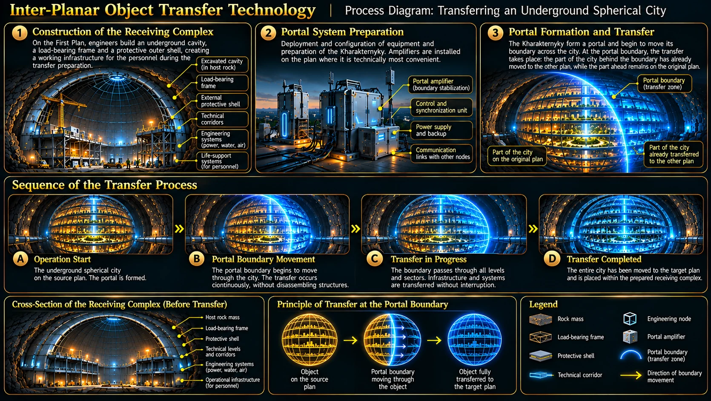

TECHNOLOGY · INTER-PLANAR TRANSFER
Transferring Objects Underground
This technology makes it possible to move entire cities, ready-made protective modules and major infrastructure complexes from one Plan to another. An object passes through a spatial portal into an underground space prepared in advance. Its internal structure and purpose are preserved.

Core Principle
A city is not dismantled building by building or transferred district by district. Characterники open a portal at a single starting point, then its boundary gradually advances along a predetermined route. As the portal moves, the city passes from one Plan to another. This is one continuous transfer of the city as a whole, not an instantaneous move triggered by the boundary closing around it.
The city being transferred already exists on the Zero Plan as an underground spherical structure. It moves to the other Plan together with its buildings, internal levels and infrastructure. The receiving complex on the First Plan is not a newly built city: it is a prepared cavity with a structural frame and protective shell that will accommodate the existing structure. An underground city retains an ordinary urban logic, but its interior is arranged across several levels. These accommodate housing, services, public spaces, recreation areas, transport and logistics hubs, engineering systems and energy infrastructure. Levels may have different layouts and are connected by passages and vertical links.
Complete concealment: excavation of receiving cavities, installation of structural shells, utility work and all other construction take place underground. The surface remains unchanged, with no visible construction sites, machinery or new structures.
Preparing the Receiving Space
Before a city can be transferred, a cavity of the required volume is prepared on the receiving Plan. Rock is not excavated with conventional mining machinery. Characterники open portals to locations agreed upon in advance and move the rock directly out of the underground area through them. In this way, a vast cavity of the required spherical shape is gradually formed. Where old mine systems exist, some workings can be reused, widened or reinforced. Typical depths for such systems are approximately 300–600 metres, depending on the location and task.
Sequential Rock Removal
First, the volume of rock to be removed is determined. Characterники open a portal beneath a selected section. That section loses its support from below and falls through the portal under its own weight. The portal is then moved beneath the neighbouring section, and the process is repeated. In this way, the entire planned volume is gradually cleared to form a spherical cavity.
The surrounding rock is not removed along with the selected section; it remains in place as a supporting mass that holds the rest of the structure. Removal therefore proceeds sequentially, in controlled sections, rather than by opening a portal beneath the entire rock mass at once.
Layer-by-Layer Removal
The cavity is formed in horizontal layers, starting at its lowest part. Within each layer, characterники identify individual sections and open portals beneath them one after another. The rock above each portal loses its support, separates from the surrounding mass and passes through the portal under its own weight to a location agreed upon in advance.
Once one section has been removed, the portal is moved beneath the next. The team gradually clears the entire horizontal layer before proceeding to the next layer above it. The size of each section is controlled: each cycle removes only as much rock as can be separated without compromising the stability of the surrounding mass.
The rock around the working area remains in place and temporarily provides natural support for the rest of the mass. This allows the cavity to grow gradually—from the bottom upwards and from one section to the next—until it reaches the planned spherical shape.
A load-bearing frame and protective shell are built inside. Technologies from the Null Plan stabilise the structure and allow it to withstand geological pressure and the load created when the entire city appears inside. Engineering systems, receiving zones and connection points are prepared at the same time.
Portal Amplifiers
The size of a portal a characterник can open depends on their individual abilities. However, even the strongest operator cannot create a portal large enough for an entire city alone. Large-scale operations therefore use portal amplifiers. The devices do not open portals themselves: characterники do that, while amplifiers help stabilise and sustain the spatial boundary.
Using a Single Amplifier
A single amplifier supports a portal that has already been opened by a characterник. This greatly reduces the effort required to keep it open, allowing the portal to remain active for a long time—even while the characterник sleeps. The characterник who opened it must nevertheless remain nearby throughout this period. The exact permissible distance has not been specified.
Using Multiple Amplifiers
When two or more amplifiers are used, the same number of characterники can open separate portals. Each portal is stabilised by its own amplifier. The portals can then join to form one large portal. Its final size depends not only on the number of devices, but also on their arrangement and the way their fields are combined.
Amplifiers are placed at selected points along the future spatial boundary. Their configuration determines how the portal can be extended, narrowed and sustained across individual sections.
Design and Appearance
Portal amplifiers do not have a single standard casing. Depending on their purpose, they may take the form of massive gate-like structures, standalone modules on supports, compact devices or simple cone-shaped markers resembling roadwork traffic cones. Their function and position within the overall configuration matter more than their external shape.
City Transfer: The Moving Portal Boundary
The operation begins at one designated point. Characterники open a portal there, and amplifiers stabilise it. The portal boundary then advances gradually along the prepared route, passing through the city. As it moves, successive parts of the city pass from the starting Plan to the receiving Plan. The city is not dismantled: its buildings and infrastructure remain one object throughout the transfer.
Movement is slow and controlled—only a few metres over several minutes. Amplifiers are positioned along the route and sequentially take over the stabilisation of the portal boundary from one another. Before each handoff, operators verify that the next node is ready. The load is transferred gradually, and the previous amplifier is disconnected only after the next one is confirmed to be holding the portal securely.
This is the most dangerous part of the operation. If the next amplifier fails to take the load during a handoff, or the portal loses stability, the release of accumulated energy can cause a catastrophic explosion, destroying everything nearby. The system therefore monitors every node continuously, and operators can stop the advance at any moment.
If an amplifier becomes unstable, movement is stopped immediately. Neighbouring nodes hold the portal while an emergency team installs a reserve amplifier. Characterники manually compensate for the transitional load, which is then transferred to the reserve node gradually, with stability checks at every stage. The operation can resume only after full stability has been confirmed.
When the portal boundary reaches the endpoint of the route, the transfer is complete. Characterники close the portal, and the receiving team begins checking the city's position, protective shell and engineering systems.
Permanent Links Between Distant Plans
If the destination Plan is not adjacent to the starting Plan, an inter-Plan tunnel must be created. It consists of a sequence of portals passing through every intermediate Plan along the route to the destination. Such a chain is harder to maintain, making portal amplifiers especially important for keeping it open and stable over time.
Inspection and Commissioning
After arrival, teams inspect the city's position, the outer shell, building integrity, engineering nodes and utilities. Amplifiers are gradually switched off and removed once the system confirms stability. Power, water, ventilation, transport, communications and control systems are then connected or switched over.
Commissioning takes place in stages: critical systems and individual sectors are checked first, followed by the rest of the city. Staged connection and inspection do not mean a staged transfer: the city itself passes through the portal as a single object.
Protective Modules and Bomb Shelters
Protective modules were manufactured in advance on the Null Plan. These are complete complexes with autonomous systems, designed to support people for approximately one month in severe conditions. After the war, they were mothballed and stored until needed.
Before transfer, specialists inspect the equipment, replenish fresh food supplies and connect the module to a local control system. A receiving cavity is prepared underground, after which a characterник moves the ready-made module directly inside through a portal. Engineers finish access routes, connect utilities, test the systems and commission the shelter.
If the site is ready, the transfer itself takes only minutes. Most of the time is spent preparing the cavity, connecting systems and carrying out checks. An additional layer of rock increases protection, but the module already has its own strong protective shell.
Hub Shelters and the Underground Network
Individual shelters have limited capacity and are not initially connected to one another. Moving people from a damaged or endangered shelter to another requires underground passages and larger hub complexes.
Hub shelters are larger ready-made modules with expanded capabilities. They can be adapted as medical centres, wards, diagnostic and operating rooms, warehouses or facilities for longer stays. Ordinary shelters are connected to hubs by underground corridors and utilities. People can move between them, receive medical care and evacuate without going to the surface.
This system is already used by the military along the entire front line: smaller shelters are connected to larger hub complexes by underground passages. This experience provides the basis for developing a civilian network.
Scale of Operations
Transferring a large city requires several specialised teams working simultaneously. An operation may involve approximately 200 portal operators, around 2,000 engineers and installers, and several hundred scientists. The exact team depends on the object's size, shell complexity and operation stage.
Preparatory work in old mine systems may require around 120 characterники. During the main transfer of a large city, the number of operators increases to approximately 200–300.
Key Limitation
A portal can move an object, but it does not eliminate the need to prepare its receiving site. The cavity, shell, utilities, redundancy and monitoring systems must be ready in advance. The larger the object, the more complex the preparation and the slower the transfer itself.
All infrastructure work remains underground. To an outside observer, the surface appears unchanged, with no visible construction activity or new structures.